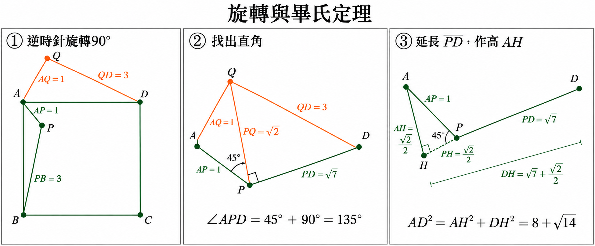

使用者提供原卷｜數學第21題
完整原題
P為正方形ABCD內部一點，PA＝1，PB＝3，PD＝√7，求正方形ABCD之面積？
先想一想，再查看答案、解說與原圖
正方形ABCD的面積＝8＋√14。
詳細說明與解題步驟
一、旋轉構造全等三角形
將正方形畫成A左上、B左下、C右下、D右上。將△PAB繞A逆時針旋轉90°，使B落在D，P落在Q。
由旋轉可知AQ＝AP＝1，QD＝PB＝3，∠PAQ＝90°。Q位於正方形外部、AD上方。
二、用畢氏定理逆定理找出直角
連接PQ。△PAQ是等腰直角三角形，所以PQ²＝AP²＋AQ²＝2，∠APQ＝45°。
在△PQD中，PQ²＋PD²＝2＋7＝9＝QD²。
因此由畢氏定理逆定理，∠QPD＝90°。
三、判斷射線順序求∠APD
在上述圖形中，射線PQ位於∠APD內，故：
∠APD＝∠APQ＋∠QPD＝45°＋90°＝135°。
這一步需配合旋轉後的位置判斷，不能只憑角度數字相加。
四、作高並求出等腰直角三角形的邊
將DP越過P延長，從A向此延長線作垂線，垂足為H；H、P、D依序共線。
∠APH＝180°－135°＝45°，因此△APH是等腰直角三角形。
設AH＝PH＝h，則2h²＝AP²＝1，所以AH＝PH＝√2／2。
因此DH＝DP＋PH＝√7＋√2／2。
五、求正方形面積
在直角三角形AHD中：
AD²＝AH²＋DH²
＝(√2／2)²＋(√7＋√2／2)²
＝1／2＋7＋√14＋1／2
＝8＋√14。
AD是正方形邊長，因此AD²就是所求面積。全程只用旋轉全等、角度關係、畢氏定理及其逆定理。

核對註記：已依使用者於2026-10-27提供的第21題原卷照片核對：原題為文字題，未附圖。解說採使用者提供且經重算的國中幾何解法；解說示意圖為另外製作，不冒充原卷。
原圖（僅本題）
此題無附圖。